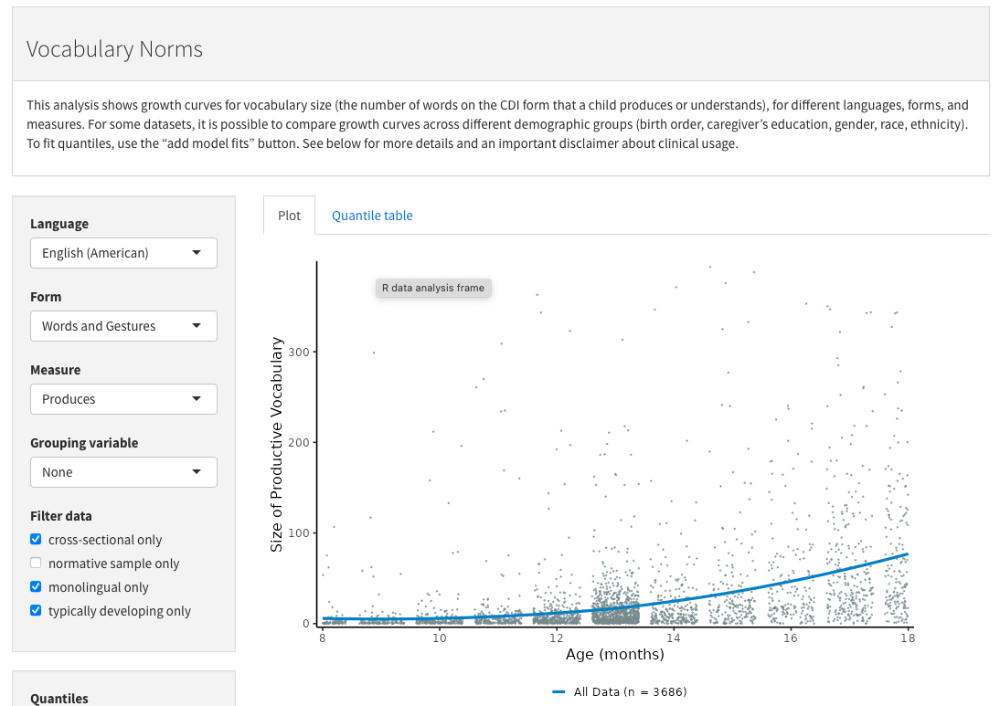
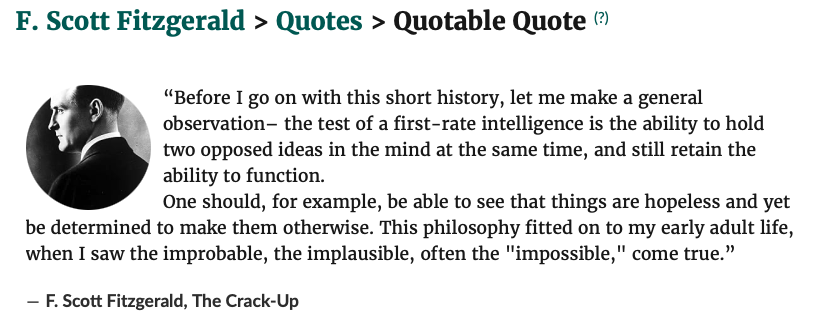

flowchart LR W[World] --->|perception| C(Child) C --->|action| W
Learning from others
2025-11-21
Rick Gilmore
Department of Psychology
Prelude
Today’s topics
Learning from others
What is learned?
- How
- Actions
- What & why
- Concepts
What are concepts?
mental representations that organize experience…
mental representations that correspond to categories of things in the world, such as dogs or chairs (Margolis 1994), I would broaden the set to include properties (green, happy), events or states (jumping, wet), individuals (Daddy, Lassie), and abstract ideas (goodness, liberty)…
– Gelman (2009)
What are concepts?
concepts are also embedded in larger knowledge structures (Gelman, 1996). Concepts therefore cannot be understood wholly as isolated components.
– Gelman (2009)
Where do concepts come from?
- Children’s
- Observations
- Actions
- Ideas
Where do concepts come from?
- Children’s
- Observations
- Actions
- Ideas
- Others’
- Speech
- Actions
Recall
…we believe that humans are endowed with a small number of separable systems of core knowledge. New, flexible skills and belief systems build on these core foundations.
– Spelke & Kinzler (2007)
Core knowledge domains
- Objects
- Numbers
- Agents
- Social partners
- Space
- Shapes
Core knowledge domains
- Objects
- Numbers
- Agents
- Social partners
- Space
- Shapes
From perception to cognition 1
flowchart LR W[World] --->|perception| C(Child) C --->|action| W C --->|cognition| C
From perception to cognition 2
flowchart LR
E[Episode_1] ---> O[Object]
O ---> S((Shape))
O ---> L((Color))
O ---> D((Distance))
O ---> M((Motion))
O ---> N((Sound))
S ---> C(Child)
D ---> C
L ---> C
M ---> C
N ---> C
C --->|perceives| P{Properties}
P --->|stores| Y{Memory_1}
Store perceptual features
flowchart TD
Y{Memory_1} --->|Shape is| S(("round"))
Y --->|Color is| L(("red"))
Y --->|Distance is| D(("within arms reach"))
Y --->|Motion is| M(("rolling along floor"))
Y --->|Sound made| N(("none"))
Next episode
flowchart LR
E[Episode_2] ---> O[Object]
O ---> S((Shape))
O ---> L((Color))
O ---> D((Distance))
O ---> M((Motion))
O ---> N((Sound))
S ---> C(Child)
D ---> C
L ---> C
M ---> C
N ---> C
C --->|perceives| P{Properties}
P --->|stores| Y{Memory_2}
Are memories ==?
flowchart TD
Y{Memory_1} --->|Shape is| S(("round"))
Y --->|Color is| L(("red"))
Y --->|Distance is| D(("within arms reach"))
Y --->|Motion is| M(("rolling along floor"))
Y --->|Sound made| N(("none"))
Z{Memory_2} --->|Shape is| S
Z --->|Color is| L
Z --->|Distance is| E(("out of arms reach"))
Z --->|Motion is| M(("rolling along floor"))
Z --->|Sound made| N(("none"))
- Do features match (mostly)
- Some features vary more often than others
Create “conceptual” placeholder
flowchart LR
C{{"Round-Red-Rollie-Thing"}} ---|is| Y{Memory_1}
C ---|is| Z{Memory_2}
Y <---> Z
Assign perceptual properties
flowchart TD
C{{"Round-Red-Rollie-Thing"}} --->|Shape is| S(("round"))
C --->|Color is| L(("red"))
C --->|Distance is| D(("within or outside arms reach"))
C --->|Motion is| M(("rolling along floor"))
C --->|Sound made| N(("none"))
- Distance can vary, but color, shape, sound do not
- Motion?
From associative learning to semantic networks

Wikipedia contributors (2025b)

Where do concepts come from?
- Children’s own actions & observations
- Others’
- Speech
- Actions
- Inferred mental states, including intentions
Next episode
flowchart LR E[Episode_3] ---> O[Object] E ---> P[Person] P --->|says 'ball' to| C(Child) O ---> C
flowchart LR
P[Person] --->|says 'ball' to| C(Child)
O[Object] ---> C
C --->|hears| B{'ball'}
C --->|perceives| D{Object properties}
D --->|activates placeholder for| E{{"Round-Red-Rollie-Thing"}}
Heard word linked to placeholder
flowchart TD
E{{"Round-Red-Rollie-Thing"}} --->|Name for is| B{'ball'}
E --->|Color is| L(("red"))
E --->|Distance is| D(("within or outside arms reach"))
E --->|Motion is| M(("rolling along floor"))
E --->|Sound made| N(("none"))
E --->|Shape is| S(("round"))

Braginsky (n.d.)
Wordbank: Vocabulary norms
Wordbank: Item trajectories

Why word learning matters
- Lexicalization
- Process of labelling concepts with words
- Map from non-linguistic \(\rightarrow\) linguistic
- Word_1 \(\neq\) Word_2 \(\rightarrow\) Concept_1 \(\neg\) Concept_2
- Implies “more stable, enduring, unchanging construal…” (Gelman, 2009, p. 121)
- Contexts in which words are used, features of words, pragmatics of speaker
Where do concepts come from?
- Children’s own actions & observations
- Others’
- Speech
- What is said, by whom, to whom, where, when, & how, etc.
- i.e., Testimony
- Speech

https://www.merriam-webster.com/dictionary/testimony

https://www.merriam-webster.com/thesaurus/testimony
Testimony
flowchart TD
T{{"Testimony"}} ---|is| S("Speech")
B["Source"] ---|from| S
B --- Y("Trustworthiness")
S ---|in a| Z("Situation")
Z ---|coincident with| P("Perceived physical properties")
Z ---|coincident with| C("Cognitive state")
P --- V("Visual")
P --- D("Acoustic")
C --- E("Attention")
C --- F("Memories")
C --- G("Concepts")
Covert and implicit categories
- Non-linguistic examples?
Essentialism
- Some categories have essential properties
- Cultures vary in
- what categories have essential features
- degree of views about essentialism
Language cues to essentialism
- Appearance vs. reality
- Highlighting categorical differences
- Broad descriptive statements about category
- Generics (“Professors are absent-minded” vs. “My professor is scatter-brained.”)
- Labeling in one context but not another
Where do concepts come from?
- Children’s own actions & observations
- and concepts
- and questions
- Others’
- Speech
- What is said, by whom, to whom, where, when, & how, etc.
- i.e., Testimony
- Speech
Example: Questions
- On their weekly drive home, Sonny notices and comments on a big apartment building.
- Mimi describes it as a place where big kids live that has many smaller houses inside.
That’s a big house where big kids live. (Sonny)
Yes, that’s a building where big kids live. There are small houses inside. (Mimi)
Questions 2
I want to see it. (Sonny)
We can’t go in there. (Mimi)
Why? (Sonny)
Only the people who live there and their friends can go inside. (Mimi)
Learning abstract concepts 1
- At dinner time, Mommy puts grapes in the section of Sonny’s plate where they usually put noodles.
That’s not kind, Mommy. (Sonny)
- Mommy suppresses laughter. Later tells Grandpa the story.
Learning abstract concepts 2
flowchart LR
E(Ellie) --->|reads book about kindness to| S(Sonny)
S --->|infers properties of| K{kindness}
flowchart LR
Z(Zander) --->|pushes| S(Sonny)
E(Ellie) --->|says Z wasn't kind| S
S --->|infers properties of| N{not-kindness}
N ---|is the opposite of| K{kindness}
Learning abstract concepts 3
flowchart TD
S(Sonny) --->|infers properties of| N{not-kindness}
N ---|involves| P[a person's behavior]
N ---|is| E[surprising]
N ---|evokes| H[negative feelings]
Learning abstract concepts 4
flowchart LR
E(Ellie) --->|puts grapes in noodle place| S(Sonny)
S --->|feels| H[negative feelings]
S --->|perceives| F[surprise]
H --- N{not-kindness}
F --- N
Learning abstract concepts 5
flowchart LR
N{not-kindness} --->|provides label for feelings for| S(Sonny)
S(Sonny) --->|says| K(("that's not kind"))
K --->|directed to| E(Ellie)
Coexistence of conceptual systems 1
Coexistence of conceptual systems 2

…bullshit is speech intended to persuade without regard for truth. The liar cares about the truth and attempts to hide it; the bullshitter doesn’t care whether what they say is true or false.
– Wikipedia contributors (2025a)

Learning from testimony
- Speaker characteristics
- Reliability
- Knowledge about domain
- Age
- How say (pragmatics, grammatical features), not just what
- Social characteristics (linguistic similarity)
- Sobel & Kushnir (2013)
Psychological characteristics
- When child knowledge uncertain, irrelevant speaker characteristics can influence
- Biases to trust familiar adults
flowchart TD
I[informant] ---|is-a| P(("person"))
I ---|is| F(("familiar|unfamiliar"))
I ---|has-a| A(("age"))
I ---|has| D(("domain knowledge"))
I ---|has been| R(("reliable"))
I ---|speaks-with| C("confidence")
I ---|speaks-with| E("familiar accent")
Wrap-up
Next time…
Resources
About
This talk was produced using Quarto, using the RStudio Integrated Development Environment (IDE), version 2025.5.1.513.
The source files are in R and R Markdown, then rendered to HTML using the revealJS framework. The HTML slides are hosted in a GitHub repo and served by GitHub pages: https://psu-psychology.github.io/psy-548-fall/
References
Braginsky, M. (n.d.). Wordbank. Retrieved November 19, 2025, from https://wordbank.stanford.edu/
Ding, X. P., Wellman, H. M., Wang, Y., Fu, G., & Lee, K. (2015). Theory-of-mind training causes honest young children to lie. Psychological Science, 26, 1812–1821. https://doi.org/10.1177/0956797615604628
Fellbaum, C. (2005). WordNet and wordnets. In K. Brown (Ed.), Encyclopedia of language and linguistics (Second Edition, pp. 665–670). Oxford: Elsevier. Retrieved from http://wordnet.princeton.edu/
Gelman, S. A. (2009). Learning from others: Children’s construction of concepts. Annual Review of Psychology, 60, 115–140. https://doi.org/10.1146/annurev.psych.59.103006.093659
Harris, P. L., Koenig, M. A., Corriveau, K. H., & Jaswal, V. K. (2018). Cognitive foundations of learning from testimony. Annual Review of Psychology, 69, 251–273. https://doi.org/10.1146/annurev-psych-122216-011710
Jaswal, V. K. (2010). Believing what you’re told: Young children’s trust in unexpected testimony about the physical world. Cognitive Psychology, 61, 248–272. https://doi.org/10.1016/j.cogpsych.2010.06.002
Mandler, J. M. (1992). How to build a baby: II. Conceptual primitives. Psychological Review, 99, 587–604. https://doi.org/10.1037/0033-295x.99.4.587
Onishi, K. H., & Baillargeon, R. (2005). Do 15-month-old infants understand false beliefs? Science (New York, N.Y.), 308, 255–258. https://doi.org/10.1126/science.1107621
Siegler, R., & Alibali, M. (2021). Children’s Thinking (5th ed.). Pearson.
Sobel, D. M., & Kushnir, T. (2013). Knowledge matters: How children evaluate the reliability of testimony as a process of rational inference. Psychological Review, 120, 779–797. https://doi.org/10.1037/a0034191
Spelke, E. S., & Kinzler, K. D. (2007). Core knowledge. Developmental Science, 10, 89–96. https://doi.org/10.1111/j.1467-7687.2007.00569.x
Wellman, H. M. (2012). Theory of mind: Better methods, clearer findings, more development. The European Journal of Developmental Psychology, 9, 313–330. https://doi.org/10.1080/17405629.2012.680297
Wikipedia contributors. (2025a, September 4). On bullshit. Retrieved from https://en.wikipedia.org/wiki/On_Bullshit
Wikipedia contributors. (2025b, October 3). Semantic network. Retrieved from https://en.wikipedia.org/wiki/Semantic_network